David O'Toole Org tutorial
Table of Contents
Introduction
Org-mode is a personal information management and outlining tool for Emacs. This document is intended to give the reader a "feel" for org-mode and to teach basic usage with step-by-step instructions and plentiful screenshots. It is not intended to replace the manual, as only a subset of org-mode's features are covered.
This tutorial has been translated into French, Spanish, Japanese, Chinese, and Korean. Special thanks to the translators.
Obtaining org-mode
Org-mode is part of Emacs 22 and 23, so if you have a modern version of Emacs, you have it already.
If not, you can download it org-mode home page., unpack it and point the Emacs load path to the lisp directory in the Org-mode distribution:
(add-to-list 'load-path "PATH_TO_WHERE_YOU_UNPACKED_ORGMODE/lisp")
Activation
Add the following to your .emacs:
(require 'org-install)
(add-to-list 'auto-mode-alist '("\\.org$" . org-mode))
(define-key global-map "\C-cl" 'org-store-link)
(define-key global-map "\C-ca" 'org-agenda)
(setq org-log-done t)
This will make sure org gets loaded, and some basic global key combinations are defined. We'll go over what "org-store-link" and "org-agenda" do later in this document.
One more thing—it's best to set aside a separate directory where your org files will be kept. I recommend using ~/org.
The basics
This section illustrates basic org-mode usage by showing how I used org-mode to create this document.
Creating a new file
If you've configured your Emacs initialization file as suggested above, Emacs should enter org-mode whenever you visit or create a file with the extension ".org".
I created a new file called "OrgTutorial.org" and saw the "Org" indicator in the modeline, showing that we've entered org-mode.
Simple task list
First I entered a headline called "Tasks" to keep tasks under. This isn't necessary but is often convenient, especially when you want to keep tasks separate from the body of a document you're writing.
First-level headlines begin with one star; second-level headlines begin with two stars, and so on.
In org-mode, TODO items are always headlines. I entered a TODO item for "Start new org file for tutorial."
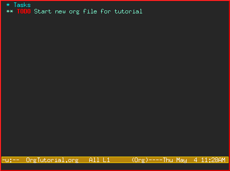
This is a bit silly, because we've already started a new file. So, let's mark the TODO item DONE by moving the cursor onto that line and hitting C-c C-t, which runs the command org-todo.
Here is the result:
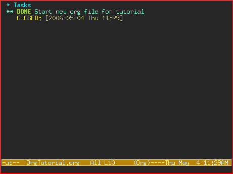
Notice how org-mode uses a timestamp to record when a TODO item was closed.
Let's add some more TODO items. Position the cursor on the next line, and hit M-shift-RET to call org-insert-todo-heading. You can hit it several times to add several TODOs.
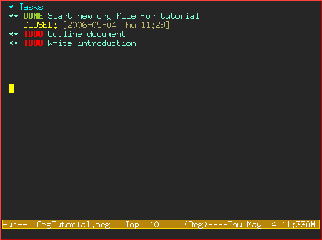
Using headlines to structure a document
Often the best way to organize your ideas is an outline. My next step is to outline the different topics of the tutorial. By doing this, you break up the intimidating blank page into a series of less-intimidating smaller chunks. Then it becomes easier to fill them in.
Remember that one star begins a first-level heading, and two stars begin a second-level heading. If you need deeper nesting, go ahead and use three or more stars!
Here is what it looked like after I finished outlining the document:

Notice I marked "Outline document" as DONE after I finished.
Filling in the sections
You can easily add body text underneath any headline.
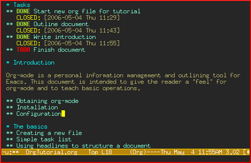
Links to other places
In the section on "Obtaining Org-mode" I need to provide a link to the org-mode website. A special bracket syntax is used when linking:
[[link][description]]
Watch how I first type the link and description, leaving open the last bracket:
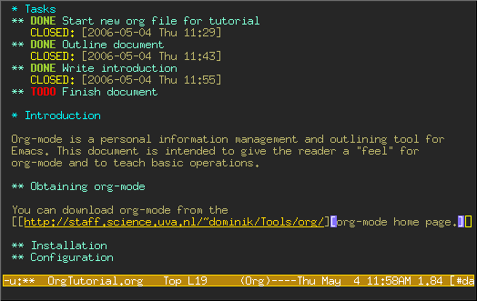
Then when I type the last bracket, the link "collapses" and simply shows the description.
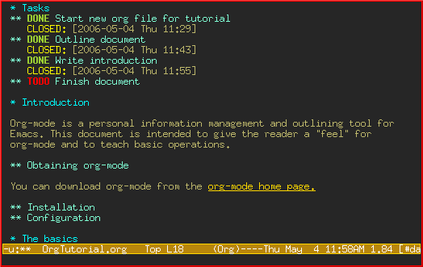
Try moving the cursor over the link and press C-c C-o for org-open-at-point.
You can also link to local files. Try visiting another file—for example, your emacs initialization file. Then hit C-c l to call org-store-link. You'll see a message that a link was stored to the current location in the file you're visiting.
Then switch back to your org-mode buffer and paste the link using C-c C-l to call org-insert-link. (You may need to press the arrow keys to scroll through and find the link you just recorded.)
Overviews of a document
By this time, my document is getting longer and I can no longer fit it all on one screen. Org-mode makes it easy to get an overview of your document by pressing shift-TAB.
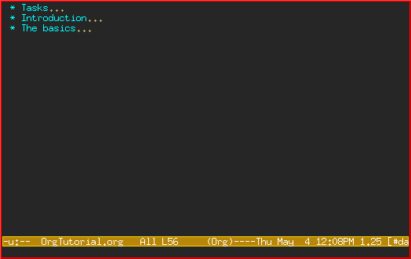
Notice that just the top-level headings are shown. You can hit shift-TAB again to show all headings, including TODO items:
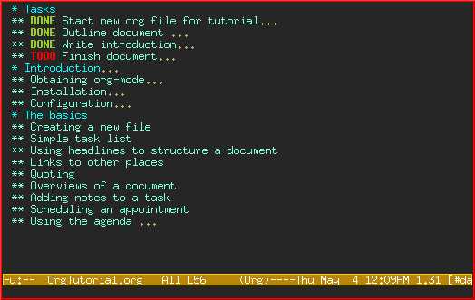
Then hit it again to show a normal view of the document, with section bodies shown:
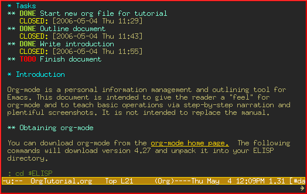
Adding notes to a task
You can put as much text as you want under a TODO item's heading. In fact, you can even have subheadings under a TODO, and TODOs within TODOs!
Being able to annotate tasks makes it easy to collect related links and thoughts along with a task. Being able to nest tasks is great for modeling workflow—quite often, a larger task is broken into smaller subtasks you want to check off as you do them.
A taste of advanced features
Before we finish, we'll touch on org-mode's global TODO list, scheduling, and agenda features. These are used to combine relevant TODO items from different org files into a prioritized, chronological display. You can also use it to see which tasks were completed, and when.
Setup
First you must set the variable org-agenda-files so that org-mode will know which files to search for TODOs and scheduled items.
Let's imagine you already have several org files—say, one for work, one for home, and one for school.
Then you'd add the following to your emacs initialization file:
(setq org-agenda-files (list "~/org/work.org"
"~/org/school.org"
"~/org/home.org"))
The global TODO list
Press C-c a t to enter the global todo list. Org-mode will scan the files in org-agenda-files and present a listing of all the open TODO items:
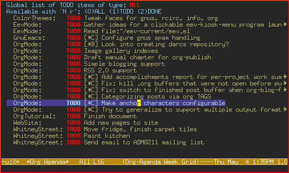
You can move the cursor around to the different todo items, and hit "t" to mark an item DONE, or hit RET to jump to the source file where the TODO is located.
Scheduling tasks and using the agenda
Let's say I want to schedule "Finish document" for today. I move the cursor to the line after the TODO item "Finish document", and hit C-c C-s to run org-schedule. The calendar pops up, and I can either enter or click the desired date:
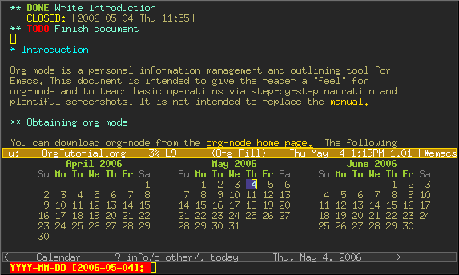
Once I select the date, org-mode inserts a scheduling timestamp after the TODO item:
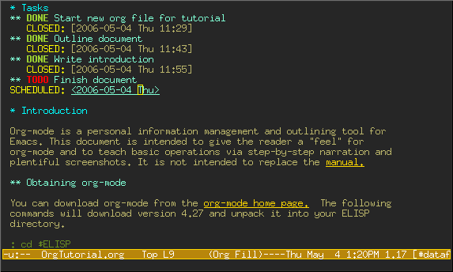
Now save your file, and hit C-c a a for org-agenda. A display of this week's scheduled items are displayed:
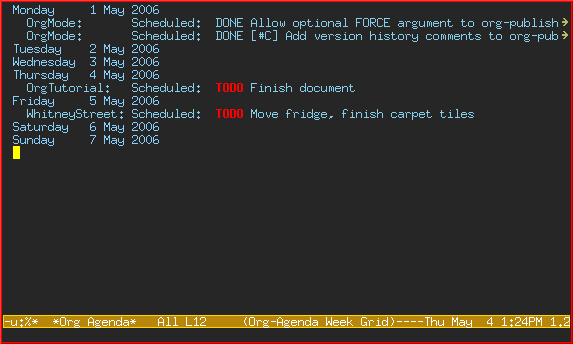
Now press "l" (lowercase L) to turn on log display. This displays the all finished tasks and their completion times.
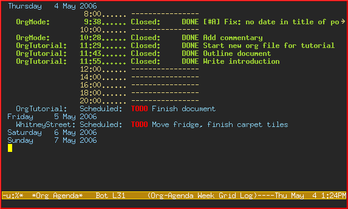
Farewell
This has been only a brief tour of org-mode. More excitement awaits you at the online org-mode manual.